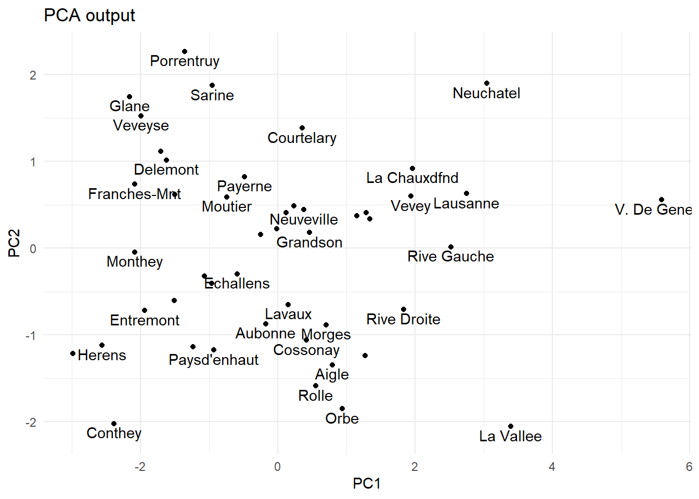
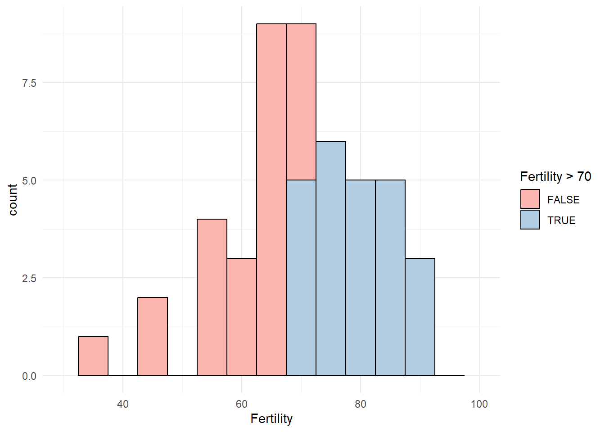
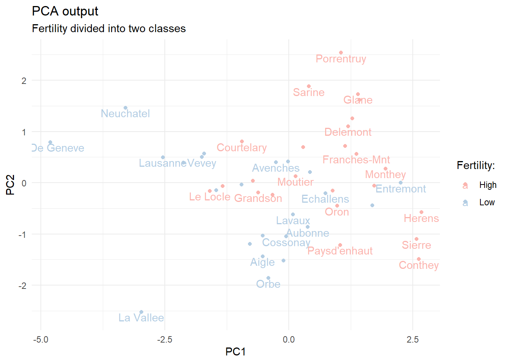
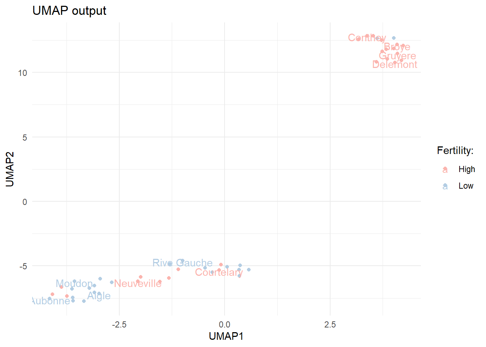
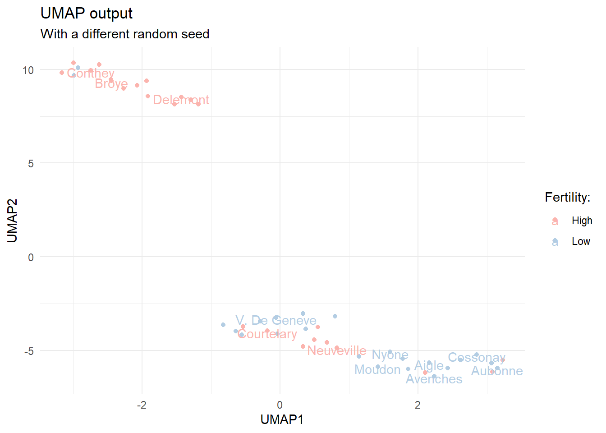
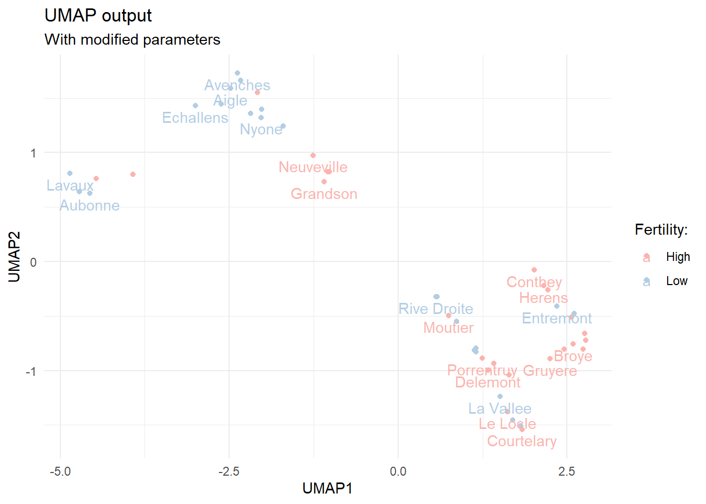

Dimensionality reduction with Uniform Manifold Approximation and Projection
dimensionality reduction
UMAP
PCA
Using UMAP with R
Author
Tero Jalkanen
Published
February 7, 2023
Uniform Manifold Approximation and Projection, UMAP for short, is a method which can be used to reduce the number of dimensions in a data set. Dimensionality reduction methods can be very useful when you are dealing with a large number of features, and can help mitigate issues such as multicollinearity. Personally I like to use them during exploratory data analysis. The umap package provides means for using UMAP with R. Let’s explore the use of UMAP a bit and compare it to another dimensionality reduction technique, Principal Component Analysis (PCA).
Using the built-in data swiss
Let’s test drive both UMAP and PCA by using the built-in swiss data, which contains different numeric indicators for 47 Swiss municipalities.
We can condense the variability found in the data into smaller dimensions by using PCA. Let’s see how.
Dimensionality reduction via PCA
There are many packages for performing PCA in R. For example, the {stats} package has the prcomp function. Let’s use it, and visualize the first two principal components.
# Perform PCApca.out <-prcomp(swiss, scale. =TRUE)# record names of municipalities into a tibblemunicipalities <-row.names(pca.out$x) %>%as_tibble() %>%rename(municipality = value)# visualize first two principal componentspca.out$x %>%as_tibble() %>%bind_cols(municipalities) %>%ggplot(aes(x = PC1, y = PC2, label = municipality)) +geom_point() +geom_text(check_overlap =TRUE, nudge_y =-0.1) +ggtitle("PCA output")

The first two principal components of the swiss data.
From the plot above we can see which municipalities share similarities based on the data. That being said, this example is somewhat artificial, and does not make much sense beyond testing PCA output. In a more pragmatic setting, we might be interested, for example, if some numeric features help us to classify the observations into different classes. Here, we might want to know if the other numeric indicators in the data are connected to e.g. Fertility.

A histogram of fertility values in the swiss data.
Let’s define 70 as the limit of high fertility and label municipalities above this threshold as High. This choice divides the observations into two approximately equal sized groups, but other than that is completely arbitrary. Let’s re-try PCA with the remaining numeric columns.
# modified data with fertility classesswiss_mod <- swiss %>%mutate(fert_class =if_else(Fertility >70, true ="High", false ="Low")) %>%select(-Fertility)# PCA without the Fertility columnpca_mod <-prcomp(select(swiss_mod, -fert_class), scale. =TRUE)# visualize first two principal components for the modified datapca_mod$x %>%as_tibble() %>%bind_cols(municipalities) %>%bind_cols(select(swiss_mod, fert_class)) %>%ggplot(aes(x = PC1, y = PC2, label = municipality, color = fert_class)) +geom_point() +geom_text(check_overlap =TRUE, nudge_y =-0.1) +ggtitle("PCA output", subtitle ="Fertility divided into two classes") +scale_color_manual(values =brewer.pal(n =3, "Pastel1")) +labs(color ="Fertility:")

The first two principal components of the modified swiss data. Municipalities are marked as having High fertility if the numeric value exceeds 70.
We can see that the numeric columns provide some degree of separation between the high and low fertility municipalities.
Dimensionality reduction with UMAP
Let’s try the umap function on the modified swiss data to see what we get as output.
library(umap)set.seed(123)# calculate UMAP for the dataumap.out <-umap(select(swiss_mod, -fert_class))# plot the two UMAP componentsumap.out$layout %>%as.data.frame() %>%rename(UMAP1 = V1, UMAP2 = V2) %>%bind_cols(municipalities) %>%bind_cols(select(swiss_mod, fert_class)) %>%ggplot(aes(x = UMAP1, y = UMAP2, label = municipality, color = fert_class)) +geom_point() +geom_text(check_overlap =TRUE, nudge_y =-0.1) +ggtitle("UMAP output") +scale_color_manual(values =brewer.pal(n =3, "Pastel1")) +labs(color ="Fertility:")

The first two UMAP components for the modified swiss data.
We can see that the output from UMAP is somewhat different. The observations are more clearly divided into two clusters. The clusters do not seem to fully overlap with the Fertility classes we constructed.
It is good to understand that the UMAP algorithm contains a random element, which means that the output of the algorithm differs slightly depending on the random seed. Let’s test this by running the calculations again with a different seed.
set.seed(345)

Re-calculated UMAP components with a different random seed.
We notice that the output is quite similar, but still slightly different. There are actually quite a few arguments we can feed to the umap function. The default values are listed under umap.defaults. Let’s take a look.
umap.defaults
umap configuration parameters
n_neighbors: 15
n_components: 2
metric: euclidean
n_epochs: 200
input: data
init: spectral
min_dist: 0.1
set_op_mix_ratio: 1
local_connectivity: 1
bandwidth: 1
alpha: 1
gamma: 1
negative_sample_rate: 5
a: NA
b: NA
spread: 1
random_state: NA
transform_state: NA
knn: NA
knn_repeats: 1
verbose: FALSE
umap_learn_args: NA
By changing these default values we can affect the output. Let’s see what happens when we change the default number of components and nearest neighbors.
# re-calculate UMAP for the dataumap.out <-umap(select(swiss_mod, -fert_class),n_components =4, random_state =333,n_neighbors =5)

Re-calculated first and second UMAP components with a different random seed, more components and smaller number of nearest neighbors.
Now the output resembles more the one we got by using PCA. The original article on UMAP goes into finer detail with regards to the effects of hyperparameter tuning, but we can certainly see that we can tune the output significantly.
Final thoughts
The {umap} package makes it easy to use UMAP in R. Although we barely scratched the surface here, we were able to see how UMAP gives different outputs compared to PCA.
If you are interested in using UMAP as a part of your modeling pipeline, you can also find it from tidymodels. Julia Silge has a nice blog post comparing the use of PCA and UMAP in this setting.